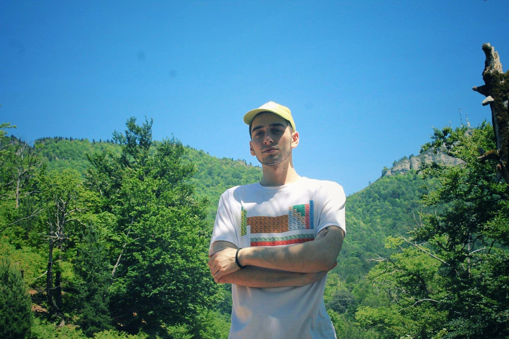

საბა საითიძე
about
My galery
Projects
He was born on 14 January, in 2002. He has graduated
Georgian-American International High school Progress in Kutaisi
in 2020. After graduating high school. He started studying in
Tbilisi state university.
